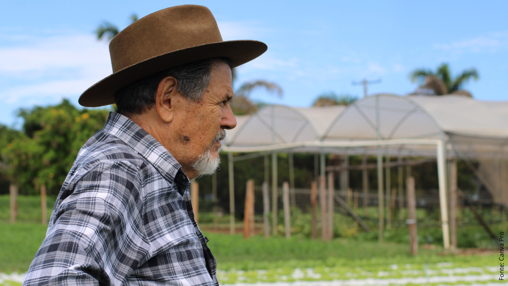
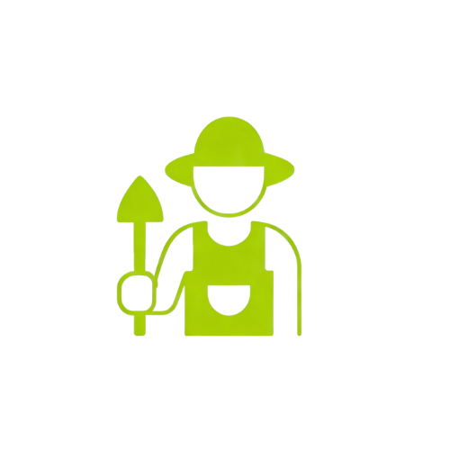
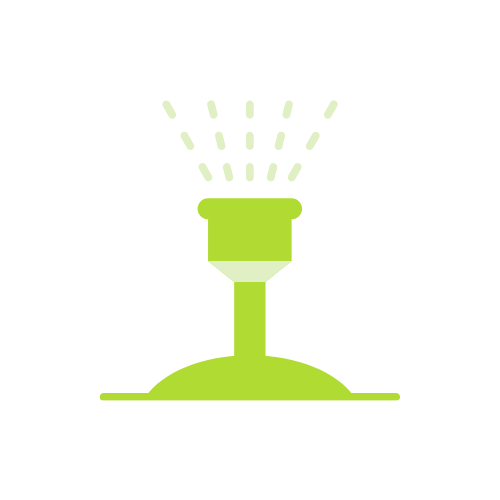
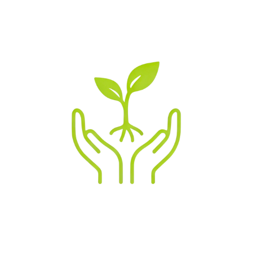
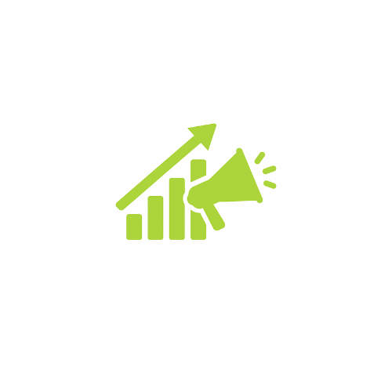
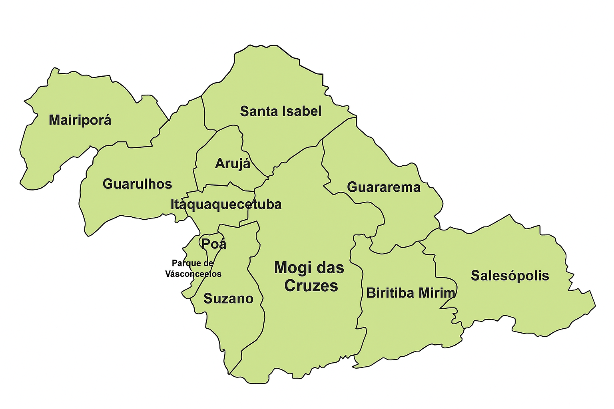

O Projeto
O Projeto tem como objetivo principal promover a formação de produtores rurais e agentes públicos municipais para o uso eficiente dos recursos hídricos.
A iniciativa, coordenada pelo CONDEMAT em parceria com o Instituto Água Sustentável e financiada pelo FEHIDRO, busca fortalecer a gestão ambiental e a conservação dos mananciais por meio de oficinas teóricas e práticas, incentivo à adoção de técnicas agrícolas mais eficientes e disseminação de conhecimento técnico voltado à sustentabilidade e à proteção dos recursos hídricos da região do Alto Tietê Cabeceiras.

Objetivos

Capacitar produtores rurais em boas práticas agrícolas.

Promover o uso sustentável da água e irrigação eficiente.

Incentivar ações de recuperação ambiental.
Fortalecer a cooperação entre municípios e instituições.

Divulgar resultados e boas práticas para replicação.
Municípios participantes
A ação cobre municípios estratégicos da região para ampliar práticas sustentáveis e de conservação hídrica.
Mogi das Cruzes
Salesópolis
Suzano
Paraibuna
Ribeirão Pires

Resultados Esperados
Uso mais eficiente da água
Produtores rurais passam a utilizar técnicas mais eficientes de irrigação, reduzindo desperdícios e preservando recursos hídricos.
Práticas agrícolas sustentáveis
Incentivo à adoção de boas práticas agrícolas que aumentam a produtividade sem comprometer o meio ambiente.
Redução da pressão sobre recursos hídricos
A diminuição da extração e do uso inadequado da água contribui para a preservação dos mananciais e ecossistemas locais.
Gestão integrada e participativa
Fortalecimento da gestão participativa entre municípios, produtores e instituições, promovendo decisões mais sustentáveis.